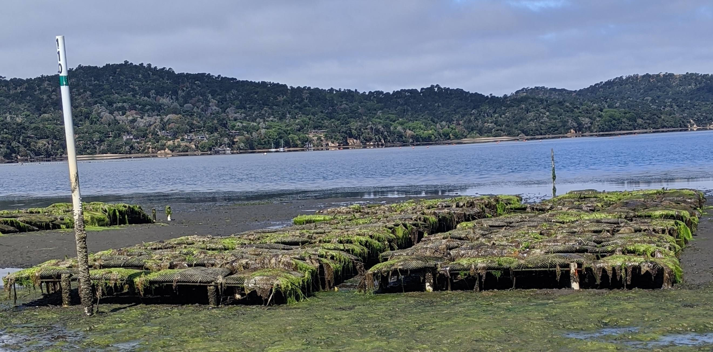

Do recently recruited California mussels (Mytilus californianus) record ocean acidification in their larval shells?
As ocean acidification intensifies along the California coast, common coastal organisms, such as mussles may be useful "bio-indicators" of these changing ocean conditions. M. californianus recruits are a good candidate for such an indicator because they retain their larval shell when they recruit. The size of this larval shell could be indicative of offshore ocean conditions, where mussels spend the first phase of their life cycle.
Report
Gaylord, B., Rivest, E., Hill, T., Sanford, E., Shukla, P., Ninokawa, A., Ng, G. 2018. California Mussels as Bio-Indicators fo Ocean Acidification.. California's Fourth Climate Change Assessment. Report.

Can oyster growers monitor changing ocean chemistry and respond to adverse conditions?
In the mid-2000s, oyster growers in Oregon were seeing oyster die-offs associated with low pH levels brought ashore by seasonal upwelling events. To help shellfish farms monitor the different variables associated with changing chemistry and strategize a response, "Burke-O-Lators" have been deployed across the U.S. West Coast; the data are publicly available.